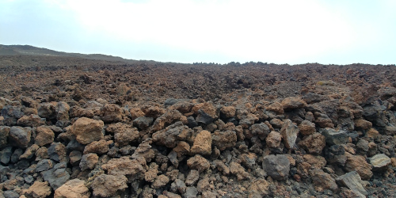
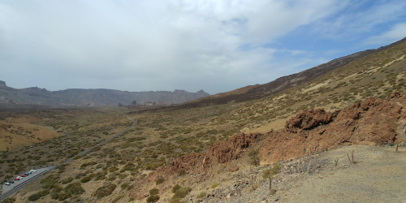
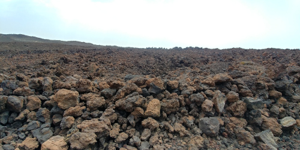
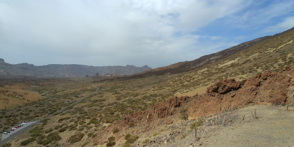

Jestem absolewentką Politechiki Krakowskiej. W wolnych chwilach lubię czytać i podróżować.
W życiu nie boję się żadnych wyzwań, cytując Irenę Kwiatkowską z "Czterdziestolatka"
"Ja jestem kobieta pracująca - żadnej pracy się nie boję."

Z wykształcenia jestem inżynierem budownictwa. Przez około 4 lata pracowałam jako inżynier budowy między innymi przy modernizacji budynku użyteczności publicznej i rozbudowie zakładu produkcyjnego.
Do zakresu moich obowiązków należało między:
- analiza dokumentacji technicznej pod kątem błędów lub niespójności
- bieżące rozwiązywanie problemów technicznych
- współpraca z kadrą inżynierską, podwykonawcami i klientami
- prowadzenie i archiwizacja dokumentacji
- przygotowywanie dokumentacji powykonawczej
- bezpośredni nadzór nad realizacją robót budowlano-montażowych
- nadzór i koordynacja pracowników oraz podwykonawców
- planowanie kolejności robót i egzekwowanie zakresu wykonania i terminowości
- planowanie kolejności robót i egzekwowanie zakresu wykonania i terminowości
- raportowanie do przełożonego z postępu prac
Obecnie pracuję jako support.
 


